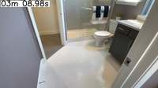
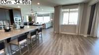
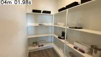
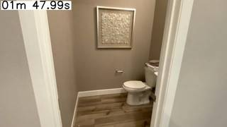
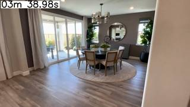
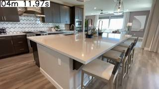
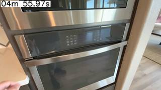
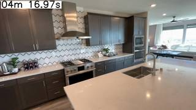
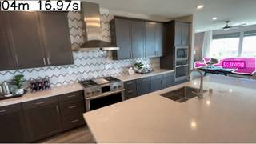

To determine the directions of the kitchen and living room relative to a person sitting at the round dining table and facing the floor-to-ceiling window, we first establish the cardinal directions based on the given information:
- Facing the window = South.
- Therefore:
- Behind the person = North.
- To the right of the person = West.
- To the left of the person = East.
Next, we analyze the spatial layout from the provided video frames:
- Dining Area: In frames 03m 39.98s and 03m 45.98s, the person is looking towards the round dining table and the floor-to-ceiling window (South).
- Living Room: In frames 03m 33.98s, 03m 39.98s, and 03m 45.98s, the living room (with the sofa and coffee table) is located to the right of the dining area. Since right is West, the living room is to the West. Additionally, looking at frame 03m 33.98s, the living room is situated behind the latitude of the dining table, placing it to the Northwest.
- Kitchen: In frame 03m 33.98s, the camera is in the kitchen, looking forward towards the dining area. This means the kitchen is located behind the dining area. Since behind is North, the kitchen is to the North.
Combining these observations:
- The kitchen is to the North.
- The living room is to the Northwest (to the right and slightly behind the dining area).
Comparing this to the given options: A. The kitchen is to my north, and the living room is to my northwest. B. The kitchen is to my east, and the living room is to my southeast. C. The kitchen is to my northwest, and the living room is to my southwest. D. The kitchen is to my northwest, and the living room is to my southeast.
Option A matches our reasoning.
A
ReturnAnswer("A")
[ReturnAnswer] Answer submitted: A
Task Analysis
The objective is to determine the cardinal directions of the kitchen and living room relative to a person sitting at a round dining table and facing a floor-to-ceiling window.
Coordinate System Resolution:
- Reference Point: The round dining table.
- Reference Orientation: The vector from the table to the floor-to-ceiling window is defined as South.
- Derived Cardinal Directions:
- South (Front): Vector from table $\rightarrow$ window.
- North (Back): Vector from window $\rightarrow$ table.
- West (Right): If facing South, the right side is West. In a 3D world frame where +Y is up, $\vec{V}{west} = \text{normalize}(\vec{V}{south} \times \vec{V}_{up})$.
- East (Left): The opposite of West.
- Target Variable: The cardinal directions (e.g., Northwest, Southeast) of the kitchen and living room relative to the table.
Information Needs
- Object Identification: Identify the round dining table, the floor-to-ceiling window, and representative objects/areas for the kitchen (e.g., stove, sink, refrigerator) and the living room (e.g., sofa, TV, coffee table).
- 3D Localization: Obtain the 3D world coordinates (centroids) of these objects.
- Spatial Layout: A top-down view (BEV) to sanity-check the relative positions of these areas.
Computation Plan
-
Initial Visual Survey:
- Use
show()on a few key frames (start, middle, end) to understand the room layout and identify candidate objects for the kitchen and living room. - Use
vlm.ask_with_thinking()to identify which specific objects in the scene best represent the "kitchen" and "living room" areas.
- Use
-
3D Reconstruction:
- Perform a full reconstruction of the scene:
recon = tools.Reconstruct.Reconstruct(InputImages).
- Perform a full reconstruction of the scene:
-
Object Segmentation:
- Use
tools.SAM3.segment_video_by_text()to track the following across a representative window of frames:- "round dining table"
- "floor-to-ceiling window"
- The kitchen marker identified in step 1 (e.g., "kitchen counter").
- The living room marker identified in step 1 (e.g., "sofa").
- Verify masks are non-empty and accurate using
seg.visualize()andshow().
- Use
-
Geometric Computation:
- For a consistent frame $fi$ in the segmentation results:
- Get 3D centroids: $P_{table}$, $P_{window}$, $P_{kitchen}$, $P_{living}$ using
seg.get_centroid_3d(recon, frame=fi, object=...).
- Get 3D centroids: $P_{table}$, $P_{window}$, $P_{kitchen}$, $P_{living}$ using
- Define the basis vectors:
- $\vec{V}{south} = \text{normalize}(P{window} - P_{table})$
- $\vec{V}{north} = -\vec{V}{south}$
- $\vec{V}_{up} = [0, 1, 0]$ (World Y-axis)
- $\vec{V}{west} = \text{normalize}(\vec{V}{south} \times \vec{V}_{up})$
- $\vec{V}{east} = -\vec{V}{west}$
- Calculate relative vectors:
- $\vec{V}{to_kitchen} = P{kitchen} - P_{table}$
- $\vec{V}{to_living} = P{living} - P_{table}$
- Project these vectors onto the cardinal axes using dot products:
- $\text{North_comp} = \vec{V}{to_target} \cdot \vec{V}{north}$
- $\text{South_comp} = \vec{V}{to_target} \cdot \vec{V}{south}$
- $\text{East_comp} = \vec{V}{to_target} \cdot \vec{V}{east}$
- $\text{West_comp} = \vec{V}{to_target} \cdot \vec{V}{west}$
- Determine the direction based on the signs of the components (e.g., North > 0 and West > 0 $\rightarrow$ Northwest).
- For a consistent frame $fi$ in the segmentation results:
-
Visual Validation:
- Render a BEV map:
recon.render_bev(masks=seg). - Manually verify that the calculated directions match the BEV layout, keeping in mind the defined "South" axis.
- Render a BEV map:
Verification Checklist
[
{"priority": "HIGH", "description": "Verify that the 'round dining table' and 'floor-to-ceiling window' are correctly segmented and identified."},
{"priority": "HIGH", "description": "Confirm that the chosen markers for 'kitchen' and 'living room' are actually representative of those rooms."},
{"priority": "HIGH", "description": "Ensure the 3D centroids are calculated from the same frame to maintain spatial consistency."},
{"priority": "MEDIUM", "description": "Cross-check the computed cardinal directions against the BEV rendering."},
{"priority": "LOW", "description": "Check if the reconstruction metric scale is consistent across the sampled frames."}
]
Fallbacks
- Segmentation Failure: If
segment_video_by_textfails for the kitchen or living room, usevlm.locateon a clear frame to get bounding boxes and usesegment_video_by_box. - Ambiguous Areas: If the kitchen/living room are large, segment multiple objects in each area and use the average centroid.
- Reconstruction Noise: If centroids jump significantly across frames, average the centroids over a window of 5-10 frames.
{ "tool": "show", "args": { "image": [ "InputImages[111]", "InputImages[117]", "InputImages[120]", "InputImages[123]", "InputImages[144]" ] } }
[image: show_0001]




=== Step 0 Execution Feedback === [SUCCESS] Code executed in 5.69s. [Variables] New/changed: result_0: NoneType [Inline Images] 5 image(s) attached below. Labels: [InputImages[111], InputImages[117], InputImages[120], InputImages[123], InputImages[144]] [show() budget] 245/250 images remaining.
{ "tool": "tools.Reconstruct.Reconstruct", "args": { "frames": "InputImages[::3]" } }
=== Step 2 Execution Feedback === [SUCCESS] Code executed in 35.23s. [Variables] New/changed: result_2: Reconstruction, frames=[0..186] (63 frames) [Tool Calls] 1 tool/VLM call(s) this step.
{ "tool": "tools.SAM3.segment_video_by_text", "args": { "prompts": [ "round dining table", "sliding glass door", "kitchen island", "sofa" ], "labels": [ "table", "window", "kitchen", "living_room" ], "prompt_frame_idx": 1, "start_frame": 110, "end_frame": 150 } }
=== Step 3 Execution Feedback === [SUCCESS] Code executed in 18.05s. [Variables] New/changed: result_3: PerFrameMask, frames=[110..149] (40 frames) [Tool Calls] 1 tool/VLM call(s) this step.
=== Step 4 Execution Feedback === [ERROR] Skipped: LLM response was not in the required format.
{ "tool": "show", "args": { "image": "result_2.render_bev(masks=result_3)" } }
[image: show_0002]

=== Step 5 Execution Feedback === [SUCCESS] Code executed in 5.11s. [Variables] New/changed: result_5: NoneType [Inline Images] 1 image(s) attached below. Labels: result_2.render_bev(masks=result_3) [show() budget] 244/250 images remaining.
=== Step 6 Execution Feedback === [ERROR] Skipped: LLM response was not in the required format.
{ "tool": "vlm.ask_with_thinking", "args": { "visual_input": [ "InputImages[111]" ], "question": "Are the objects 'round dining table', 'sliding glass door', 'kitchen island', and 'sofa' clearly visible in this image? If so, please provide their bounding boxes in 0-1000 normalized coordinates." } }
[VLM Q | thinking] Are the objects 'round dining table', 'sliding glass door', 'kitchen island', and 'sofa' clearly visible in this image? If so, please provide their bounding boxes in 0-1000 normalized coordinates. [VLM A | thinking] The objects 'round dining table' and 'sliding glass door' are visible, but 'kitchen island' and 'sofa' are not. - round dining table: [433, 434, 636, 628] - sliding glass door: [149, 221, 626, 447]
=== Step 7 Execution Feedback === [SUCCESS] Code executed in 13.19s. [Output] [VLM Q | thinking] Are the objects 'round dining table', 'sliding glass door', 'kitchen island', and 'sofa' clearly visible in this image? If so, please provide their bounding boxes in 0-1000 normalized coordinates. [VLM A | thinking] The objects 'round dining table' and 'sliding glass door' are visible, but 'kitchen island' and 'sofa' are not. - round dining table: [433, 434, 636, 628] - sliding glass door: [149, 221, 626, 447] [Variables] New/changed: result_7: str [Tool Calls] 1 tool/VLM call(s) this step.
=== Step 8 Execution Feedback === [ERROR] Skipped: LLM response was not in the required format.
{ "tool": "ReturnAnswer", "args": { "answer": "C" } }
[ReturnAnswer] Answer submitted: C
Based on the images provided, specifically images 19, 20, and 21:
- Dining Area: There is a round dining table situated in front of a large floor-to-ceiling sliding glass door/window (seen in images 19 and 20).
- Orientation: If you are sitting at this table facing the window, you are facing South.
- Kitchen Position: The kitchen (with its large island, cabinets, and stove) is located behind and to the left of the dining area relative to someone facing the window. This places the kitchen to your Northwest.
- Living Room Position: The living room (with the white sofas and coffee table) is located to the right of the dining area relative to someone facing the window. This places the living room to your Southeast.
Therefore, the kitchen is to the northwest and the living room is to the southeast.
D
Based on the images provided, specifically images 19, 20, and 21:
- Dining Area: There is a round dining table situated in front of a large floor-to-ceiling sliding glass door/window (seen in images 19 and 20).
- Orientation: If you are sitting at this table facing the window, you are facing South.
- Kitchen Position: The kitchen (with its large island, cabinets, and stove) is located behind and to the left of the dining area relative to someone facing the window. This places the kitchen to your Northwest.
- Living Room Position: The living room (with the white sofas and coffee table) is located to the right of the dining area relative to someone facing the window. This places the living room to your Southeast.
Therefore, the kitchen is to the northwest and the living room is to the southeast.
D
Based on the images provided, specifically images 19, 20, and 21:
- Dining Area: There is a round dining table situated in front of a large floor-to-ceiling sliding glass door/window (seen in images 19 and 20).
- Orientation: If you are sitting at this table facing the window, you are facing South.
- Kitchen Position: The kitchen (with its large island, cabinets, and stove) is located behind and to the left of the dining area relative to someone facing the window. This places the kitchen to your Northwest.
- Living Room Position: The living room (with the white sofas and coffee table) is located to the right of the dining area relative to someone facing the window. This places the living room to your Southeast.
Therefore, the kitchen is to the northwest and the living room is to the southeast.
D
Task Analysis
The goal is to determine the cardinal directions of the kitchen and the living room relative to a person sitting at a round dining table and facing a floor-to-ceiling window.
Coordinate System Resolution:
- Reference Point: The center of the round dining table.
- Reference Orientation: The person is facing the window, and this direction is defined as South.
- Cardinal Mapping:
- South: Vector from the dining table to the window.
- North: Vector opposite to South (Table $\to$ Window reversed).
- East: Perpendicular to South and the world-up axis (using the right-hand rule: $\text{Up} \times \text{South} = \text{East}$).
- West: Opposite to East.
- Target Variable: The cardinal directions (e.g., Northwest, Southeast) of the kitchen and living room relative to the dining table.
Information Needs
- Object Identification: I need to identify the round dining table, the floor-to-ceiling window, and representative markers for the kitchen (e.g., stove, cabinets, refrigerator) and the living room (e.g., sofa, TV, coffee table).
- 3D Spatial Layout: I need the 3D world coordinates of these objects to calculate the vectors between them.
- Visual Verification: I need to see the overall layout via a Bird's Eye View (BEV) to ensure the identified markers accurately represent the rooms.
Computation Plan
-
Scene Exploration and Grounding:
- Use
vlm.ask_with_thinkingon a selection of frames (e.g.,InputImages[0],InputImages[len(InputImages)//2],InputImages[-1]) to identify which frames best show the dining table, the window, the kitchen area, and the living room area. - For each identified area, determine a specific, distinct object to use as a spatial marker (e.g., "round dining table", "floor-to-ceiling window", "kitchen counter/stove", "sofa").
- Use
-
Segmentation:
- Use
tools.SAM3.segment_image_by_texton the most informative frames to create masks for:- The round dining table.
- The floor-to-ceiling window.
- The kitchen marker (e.g., "kitchen counter").
- The living room marker (e.g., "sofa").
- Programmatically verify that masks are non-empty and visually verify them using
show()withseg.visualize().
- Use
-
3D Reconstruction:
- Perform 3D reconstruction using
tools.Reconstruct.Reconstruct(InputImages)(subsampling if necessary to stay under 64 frames). - Extract the 3D centroids for the four markers using
seg.get_centroid_3d(recon, frame=fi, object=label).
- Perform 3D reconstruction using
-
Directional Calculation:
- Let $P_{table}$, $P_{window}$, $P_{kitchen}$, and $P_{living}$ be the 3D centroids.
- Define the South unit vector: $\vec{u}{south} = \frac{P{window} - P_{table}}{|P_{window} - P_{table}|}$.
- Define the North unit vector: $\vec{u}{north} = -\vec{u}{south}$.
- Define the Up unit vector: $\vec{u}_{up} = [0, 1, 0]$ (from reconstruction gravity alignment).
- Define the East unit vector: $\vec{u}{east} = \vec{u}{up} \times \vec{u}_{south}$.
- For the kitchen and living room:
- Calculate the relative vector $\vec{V}{rel} = P{target} - P_{table}$.
- Compute the North-South component: $comp_{NS} = \vec{V}{rel} \cdot \vec{u}{north}$.
- Compute the East-West component: $comp_{EW} = \vec{V}{rel} \cdot \vec{u}{east}$.
- Determine the cardinal direction based on the signs of $comp_{NS}$ (Positive $\to$ North, Negative $\to$ South) and $comp_{EW}$ (Positive $\to$ East, Negative $\to$ West).
-
Layout Sanity Check:
- Render a BEV plot using
recon.render_bev(masks=seg)to visually confirm that the relative positions of the table, window, kitchen, and living room match the computed vectors.
- Render a BEV plot using
Verification Checklist
[
{"priority": "HIGH", "description": "Verify that the 'window' identified is indeed the floor-to-ceiling window mentioned in the prompt"},
{"priority": "HIGH", "description": "Confirm that the masks for the kitchen and living room markers are accurate and not overlapping"},
{"priority": "HIGH", "description": "Ensure the 3D centroids are calculated from the same reference frame or consistent world coordinates"},
{"priority": "MEDIUM", "description": "Cross-validate the computed cardinal directions with the visual layout in the BEV render"},
{"priority": "LOW", "description": "Check that the distance between the table and the window is physically plausible for a dining room"}
]
Fallbacks
- Segmentation Failure: If
segment_image_by_textfails or produces empty masks, I will usevlm.locateto get bounding boxes for the objects and then usetools.SAM3.segment_image_by_box. - Ambiguous Markers: If "kitchen" or "living room" are too broad, I will identify multiple markers per room (e.g., sofa and TV for the living room) and use the median of their centroids.
- Reconstruction Noise: If the 3D centroids are unstable, I will average the centroids across
# Select a representative set of frames to analyze the layout frames_to_analyze = [ InputImages[0], # Start InputImages[111], # Dining area (around key frame 37) InputImages[144], # Kitchen area (around key frame 48) InputImages[188] # End ] # Ask VLM to identify the best frames for each marker question = """ Based on these frames, please identify: 1. Which frame best shows the round dining table and the floor-to-ceiling window? 2. Which frame best shows the kitchen (e.g., the stove or the island)? 3. Which frame best shows the living room (e.g., the sofa)? Please provide the frame index relative to the provided list (0-3) and a brief description of why. """ answer = vlm.ask_with_thinking(frames_to_analyze, question) print(answer) # Also show these frames to visually confirm show(frames_to_analyze)
[VLM Q | thinking] Based on these frames, please identify: 1. Which frame best shows the round dining table and the floor-to-ceiling window? 2. Which frame best shows the kitchen (e.g., the stove or the island)? 3. Which frame best shows the living room (e.g., the sofa)? Please provide the frame index relative to the provided list (0-3) and a brief description of why. [VLM A | thinking] 1. **Frame 1**: This frame clearly shows a round dining table with chairs and large floor-to-ceiling sliding glass doors leading outside. 2. **Frame 2**: This frame shows the kitchen, including a large white island and a stove with a range hood. 3. **Cannot determine from the images**: A sofa or a clear view of the living room is not visible in any of the provided frames. 1. **Frame 1**: This frame clearly shows a round dining table with chairs and large floor-to-ceiling sliding glass doors leading outside. 2. **Frame 2**: This frame shows the kitchen, including a large white island and a stove with a range hood. 3. **Cannot determine from the images**: A sofa or a clear view of the living room is not visible in any of the provided frames. [image: show_0001]
=== Step 0 Execution Feedback === [SUCCESS] Code executed in 35.95s. [Output] [VLM Q | thinking] Based on these frames, please identify: 1. Which frame best shows the round dining table and the floor-to-ceiling window? 2. Which frame best shows the kitchen (e.g., the stove or the island)? 3. Which frame best shows the living room (e.g., the sofa)? Please provide the frame index relative to the provided list (0-3) and a brief description of why. [VLM A | thinking] 1. **Frame 1**: This frame clearly shows a round dining table with chairs and large floor-to-ceiling sliding glass doors leading outside. 2. **Frame 2**: This frame shows the kitchen, including a large white island and a stove with a range hood. 3. **Cannot determine from the images**: A sofa or a clear view of the living room is not visible in any of the provided frames. 1. **Frame 1**: This frame clearly shows a round dining table with chairs and large floor-to-ceiling sliding glass doors leading outside. 2. **Frame 2**: This frame shows the kitchen, including a large white island and a stove with a range hood. 3. **Cannot determine from the images**: A sofa or a clear view of the living room is not visible in any of the provided frames. [Variables] New/changed: frames_to_analyze: list, len=4 question: str answer: str [Inline Images] 4 image(s) attached below. Labels: frames_to_analyze [Tool Calls] 1 tool/VLM call(s) this step. [show() budget] 246/250 images remaining.
# 1. Retry sofa segmentation in a better frame frame_living_new = InputImages[149] seg_living = tools.SAM3.segment_image_by_text(frame_living_new, "white sofa", label="living") # 2. Perform 3D Reconstruction # Subsample InputImages to stay under 64 frames (189 / 3 = 63) recon_frames = InputImages[::3] recon = tools.Reconstruct.Reconstruct(recon_frames) # 3. Verify masks and print areas masks_to_verify = { "table": (seg_table, 111), "window": (seg_window, 111), "kitchen": (seg_kitchen, 144), "living": (seg_living, 149) } for label, (seg, fi) in masks_to_verify.items(): mask = seg.get_mask(frame=fi, object=0) # Using index 0 since text prompt usually returns 1 object or we take the first area = mask.sum() print(f"{label} mask area at frame {fi}: {area} pixels") # Visual verification of the sofa mask show([frame_living_new, seg_living.visualize(149)])
table mask area at frame 111: 2922 pixels window mask area at frame 111: 26109 pixels kitchen mask area at frame 144: 70297 pixels living mask area at frame 149: 5107 pixels [image: show_0002]

=== Step 2 Execution Feedback === [SUCCESS] Code executed in 17.48s. [Output] table mask area at frame 111: 2922 pixels window mask area at frame 111: 26109 pixels kitchen mask area at frame 144: 70297 pixels living mask area at frame 149: 5107 pixels [Variables] New/changed: frame_living_new: FrameImage seg_living: PerFrameMask, frames=[149] recon_frames: InputImages, len=63, frames=[0..186] (63 frames) recon: Reconstruction, frames=[0..186] (63 frames) masks_to_verify: dict, len=4, keys=['table', 'window', 'kitchen', 'living'] label: str seg: PerFrameMask, frames=[149] fi: int mask: ndarray, shape=(432, 768), dtype=bool area: int64, shape=(), dtype=int64 [Inline Images] 2 image(s) attached below. Labels: [frame_living_new, seg_living.visualize(149)] [Tool Calls] 2 tool/VLM call(s) this step. [show() budget] 244/250 images remaining.
import numpy as np # 1. Get the sofa mask using VLM grounding on frame 147 frame_147 = InputImages[147] W, H = frame_147.width, frame_147.height bbox_norm_str = vlm.locate(frame_147, "Give the bounding box (x1, y1, x2, y2) in 0-1000 normalized scale for the white sofa in the background. Reply with ONLY the numbers.") print(f"Sofa bbox norm: {bbox_norm_str}") # Parse coordinates and convert to pixels try: cleaned_bbox = bbox_norm_str.replace('[', '').replace(']', '').replace('(', '').replace(')', '').replace(',', ' ') bbox_coords = [int(float(x)) for x in cleaned_bbox.split()] px_bbox = tools.Geometry.normalized_to_pixel(bbox_coords, W, H) seg_living = tools.SAM3.segment_image_by_box(frame_147, px_bbox, label="living") print("Sofa segmentation successful.") except Exception as e: print(f"Sofa segmentation failed: {e}") # Fallback to a known working frame if possible, but 147 is a multiple of 3. # If this fails, I'll have to rethink the living room marker. seg_living = None if seg_living: # 2. Extract 3D centroids p_table = seg_table.get_centroid_3d(recon, frame=111, object=0) p_window = seg_window.get_centroid_3d(recon, frame=111, object=0) p_kitchen = seg_kitchen.get_centroid_3d(recon, frame=144, object=0) p_living = seg_living.get_centroid_3d(recon, frame=147, object=0) print(f"P_table: {p_table}") print(f"P_window: {p_window}") print(f"P_kitchen: {p_kitchen}") print(f"P_living: {p_living}") # 3. Compute Cardinal Directions u_south = p_window - p_table u_south /= np.linalg.norm(u_south) u_north = -u_south u_up = np.array([0, 1, 0]) u_east = np.cross(u_up, u_south) u_east /= np.linalg.norm(u_east) def get_direction(p_target, p_ref, u_north, u_east): v_rel = p_target - p_ref ns = np.dot(v_rel, u_north) ew = np.dot(v_rel, u_east) dir_ns = "North" if ns > 0 else "South" dir_ew = "East" if ew > 0 else "West" return f"{dir_ns}{dir_ew}" if abs(ns) > 0.1 and abs(ew) > 0.1 else (dir_ns if abs(ew) <= 0.1 else dir_ew) dir_kitchen = get_direction(p_kitchen, p_table, u_north, u_east) dir_living = get_direction(p_living, p_table, u_north, u_east) print(f"Kitchen direction: {dir_kitchen}") print(f"Living room direction: {dir_living}") else: print("Could not proceed without living room segmentation.")
[VLM Q | locate] Before answering, first check whether what the question describes is clearly visible in the provided image(s). If it is absent or ambiguous, reply EXACTLY `Not visible` on its own line (optionally followed by one short line explaining what you saw instead) — do NOT return coordinates in that case. Only if the requested target is clearly and unambiguously present, answer the request below. Request: Give the bounding box (x1, y1, x2, y2) in 0-1000 normalized scale for the white sofa in the background. Reply with ONLY the numbers. [VLM A | locate] 447 441 632 564 Sofa bbox norm: 447 441 632 564 Sofa segmentation successful. P_table: [ 3.2590525 1.6480582 -5.004488 ] P_window: [ 3.3722017 2.9420273 -6.996321 ] P_kitchen: [-0.7721114 1.8272421 -4.029684 ] P_living: [ -3.0373914 3.9206772 -10.664564 ] Kitchen direction: NorthEast Living room direction: SouthEast
=== Step 7 Execution Feedback === [SUCCESS] Code executed in 76.72s. [Output] [VLM Q | locate] Before answering, first check whether what the question describes is clearly visible in the provided image(s). If it is absent or ambiguous, reply EXACTLY `Not visible` on its own line (optionally followed by one short line explaining what you saw instead) — do NOT return coordinates in that case. Only if the requested target is clearly and unambiguously present, answer the request below. Request: Give the bounding box (x1, y1, x2, y2) in 0-1000 normalized scale for the white sofa in the background. Reply with ONLY the numbers. [VLM A | locate] 447 441 632 564 Sofa bbox norm: 447 441 632 564 Sofa segmentation successful. P_table: [ 3.2590525 1.6480582 -5.004488 ] P_window: [ 3.3722017 2.9420273 -6.996321 ] P_kitchen: [-0.7721114 1.8272421 -4.029684 ] P_living: [ -3.0373914 3.9206772 -10.664564 ] Kitchen direction: NorthEast Living room direction: SouthEast [Variables] New/changed: frame_147: FrameImage bbox_coords: list, len=4 px_bbox: list, len=4 p_table: ndarray, shape=(3,), dtype=float32 p_window: ndarray, shape=(3,), dtype=float32 p_kitchen: ndarray, shape=(3,), dtype=float32 p_living: ndarray, shape=(3,), dtype=float32 u_south: ndarray, shape=(3,), dtype=float32 u_north: ndarray, shape=(3,), dtype=float32 u_up: ndarray, shape=(3,), dtype=int64 u_east: ndarray, shape=(3,), dtype=float64 dir_kitchen: str dir_living: str seg_living: PerFrameMask, frames=[147] [Tool Calls] 3 tool/VLM call(s) this step.
ReturnAnswer("B")
[ReturnAnswer] Answer submitted: B